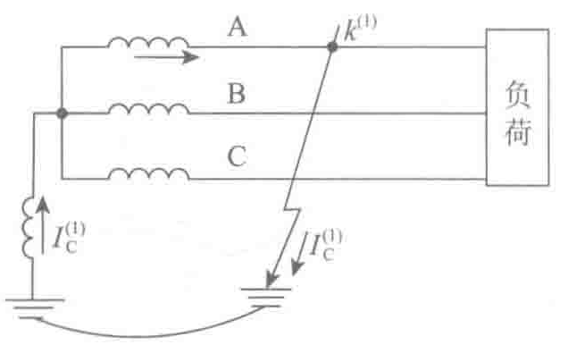

路的对地电容形成的电流回路，回路中通过的电容电流较小，达不到继电保护装置的动作电流值，故障线路不跳闸，只发出接地报警信号。有关电力规程规定系统可带单相接地故障点运行2h，在2h内排除了故障就可以不停电，从而提高了供电可靠性。
- 单相接地时，不易造成或轻微造成人身和设备安全事故。
缺点：
- 因系统单相接地故障时，非故障相对地电压升高到正常时的3倍，因此系统的绝缘水平应按线电压设计。由于电压等级较高的系统中绝缘费用在设备总价格中占有较大的比重，所以此种接地方式对电压较高的系统不适用。
- 单相接地时，易出现间歇性电弧引起的谐振过电压，幅值可达电源相电压的2.5～3倍，足以危及整个网络的绝缘。中性点经消弧线圈的运行方式可相对有效的解决该问题。
3. 中性点直接接地的运行方式
中性点和大地有紧密联系的电力系统中，无论是中性点直接接地，还是经小电阻接地，均需满足系统的零序电抗（X0）和正序电抗（X1）的比值（X0/X1）不大于3，零序电阻（r0）和正序电抗（X1）的比值（r0/X1）≤1的条件。
一般来说，该方式供电可靠性不如电力系统中性点不接地和经消弧线圈接地方式。为提高供电可靠性，在线路上广泛安装三相或单相自动重合闸装置，电气设备的绝缘水平只需按电力网的相电压考虑，这样可以降低工程造价。国内380V/220V系统中一般都采用中性点直接接地方式，主要是从人身安全角度考虑。
该系统的优点是过电压水平和输变电设备所需的绝缘水平较低。这种系统的动态电压升高不会超过系统额定电压的80%。该系统的缺点是发生单相接地故障时，单相接地电流很大，必然引起断器路跳闸，因而供电可靠性较差。单相接地电流有时会超过三相短路电流，故提高了对断路器器件的分断能力的选择难度，并会对通信线路产生干扰，进而产生较高风险。
2.2.3 中压变配电系统主接线
变配电所中压系统主接线的基本形式通常分为有汇流母线和无汇流母线两大类。汇流母线主要起汇集和分配电能的作用，又称汇流排。

有汇流母线包括单母线、单母线分段、双母线、双母线分段、增设旁路母线或旁路隔离开关、一倍半断路器接线和变压器母线组接线等。
无汇流母线包括单元接线、桥形接线、角形接线等。